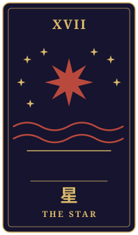

赤鉛筆
物語の手前に、ひとつの相談がありました。三枚のタロットをめぐるやりとりを、聞こえたままに書き留めています。
持ち込まれた相談
函館のホテルでフロントをしています。大学でロシア語を学び、留学中にお世話になった下宿のおばあさんが毎号読んでいた新聞が、昨日で三十年の歴史を終えたと知りました。おばあさんとはもう何年も連絡が取れていません。そんな時に東京の翻訳会社から、ロシア語の契約翻訳をやらないかと声がかかりました。正直、ロシア語から離れていた数年間、どこかでほっとしていた自分がいます。あの言葉を使い続けることが誰かの役に立つのか、ただの未練なのか分かりません。このまま函館で今の暮らしを続けるべきか、もう一度あの言葉の方へ戻るべきか、迷っています。
タロットの読み解き

過去
星・逆位置
過去の位置に出た星は、逆位置でした。この向きは、望みをかけていたものに届かなかった失望や、自分の力を信じきれなくなった時期を映すことがあります。ロシア語から離れていた数年間にほっとしていた、とご自身で話されたことも、この静かな疲れのようなものと響き合うのかもしれませんね。
ただ、星は本来、夜空にいちばん小さく、それでも確かに光る星です。逆位置の星は、その光が一時的に見えにくくなっていたことを示すだけで、消えてしまったわけではありません。

現在
女帝・正位置
現在の女帝は正位置です。豊かさや愛情、実りを育てる力をもつカードで、今のあなたは、函館での暮らしの中で人を迎え、支え、そうして何かを実らせてきた時期にあるのかもしれません。今の仕事や土地に根を下ろしていること自体が、すでに確かな実りなのだと感じさせてくれる並びです。
おばあさんの新聞が終わったと知ったことは、遠くにあった言葉が、ふいに心の近くへ戻ってきた出来事でもあったのでしょう。その知らせを、ただ寂しさとして抱えるだけでなく、大切な時間が確かにあったことの証として受け止めてみてもよいかもしれません。

未来
力・逆位置
未来の力は逆位置です。自信がゆらぎ、気持ちが強く揺れ動く時に出やすい向きですが、力のカードは本来、猛獣を穏やかに抑える静かな強さを示します。逆位置は、その強さを急いで発揮しようとして空回りしやすい状態を表すこともあります。
つまり、ロシア語の仕事に心が動くことを、すぐに答えを出す合図としてではなく、まだ自分の気持ちを確かめる途中なのだと見てみてはどうでしょう。懐かしさと未練と、誰かの役に立ちたい思いが混ざり合っているのは自然なことです。
最後に
今回の並びは、函館での穏やかな暮らしを土台に、遠ざかっていた言葉へ心が向かっているところを示しているように見えます。どちらか一方を選ぶことを急ぐより、いまの暮らしの実りを大切にしながら、翻訳の仕事が本当に自分にとって意味のある形になるかを、落ち着いて見つめてみるとよいかもしれません。
お引き受けの前に、仕事の条件や続けられる量、生活への影響を、翻訳会社や信頼できる方と具体的に話し合ってみることもおすすめします。星がふたたび見えてくるように、焦らず、ご自分の光の向きを確かめてみてくださいね。
帰り際の問い強がることで、何を見ないようにしているか。
読み解きは、タロット占い「月夜のアルカナ」が、この相談と引かれた三枚から返したものです。小説は同じ三枚を、別の角度から描いています。相談者は物語のための架空の人物です。相談文・読み解き・短編本文は、いずれも生成AIを使って制作しています。
物語に戻る